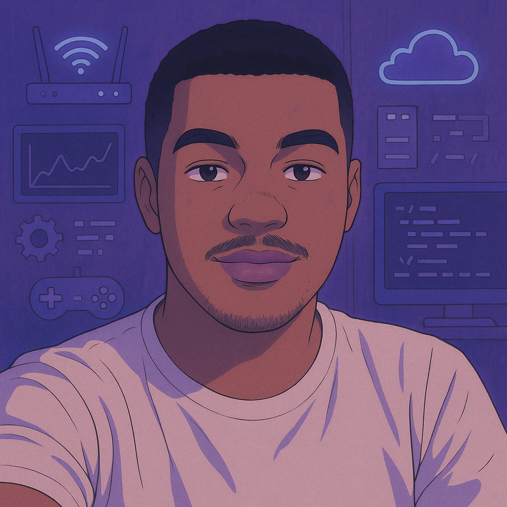
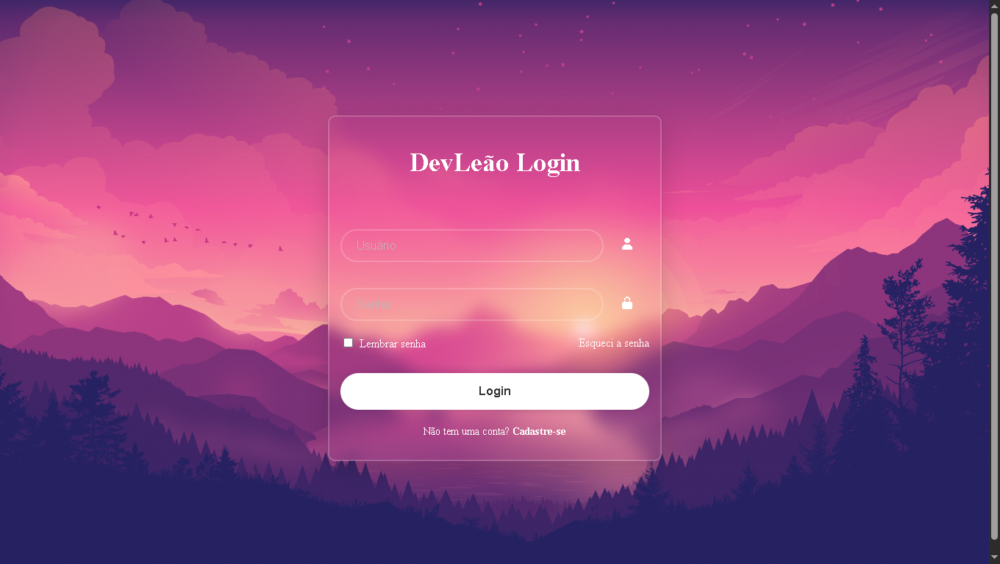
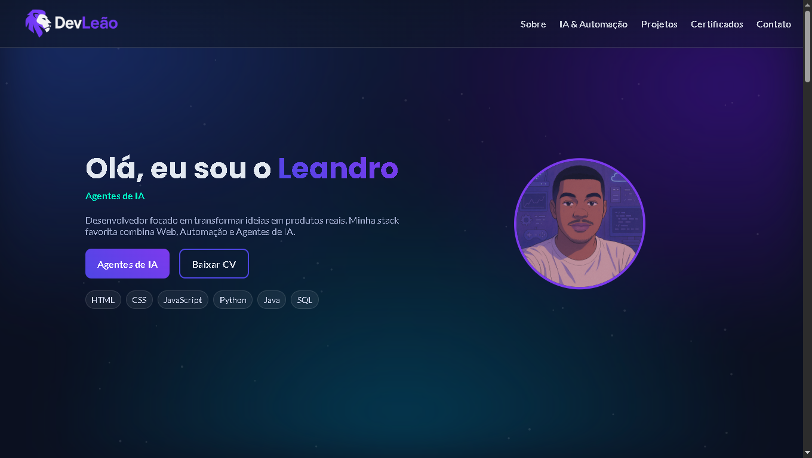
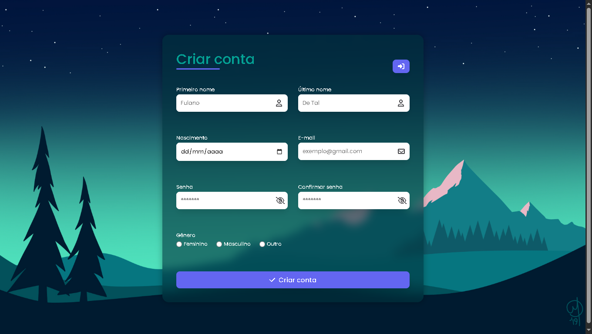
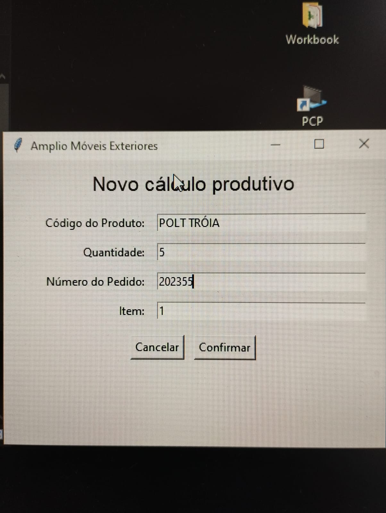
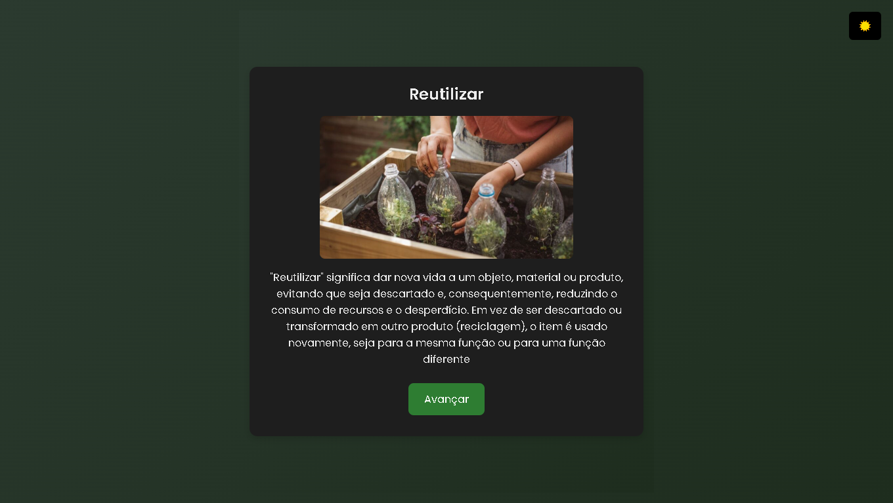
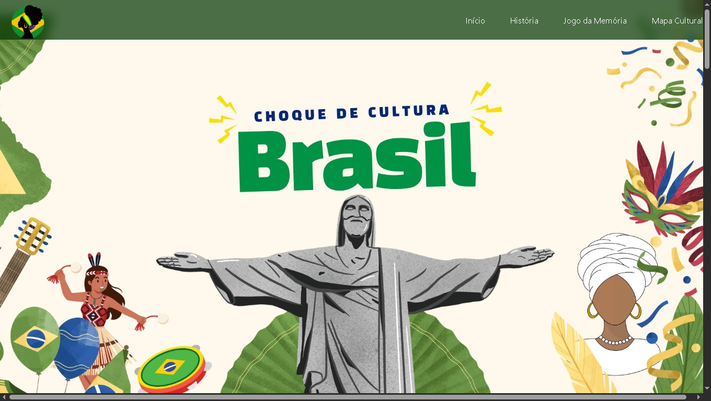
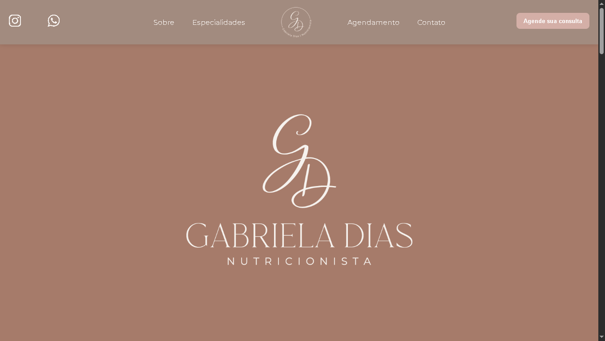
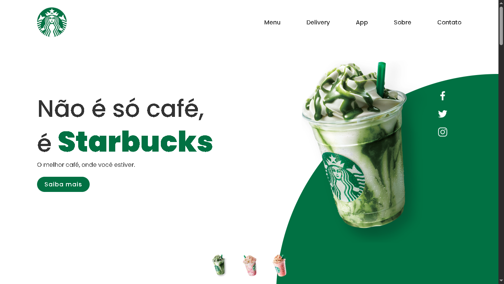

Sou estudante de ADS e adoro transformar ideias em projetos reais. Esse portfólio é um reflexo do que venho aprendendo e construindo — seja bem-vindo(a)!

Tenho projetos no GitHub usando HTML, CSS, JavaScript, C++, Java e SQL. Estou sempre explorando novas soluções e reforçando meu aprendizado com projetos práticos. Além disso, participei de cursos e atividades que fortaleceram minha base em banco de dados e desenvolvimento web.
Busco escrever código limpo, pensar em soluções práticas e evoluir constantemente como desenvolvedor.
Expandir minha atuação em projetos desafiadores, aplicando minhas habilidades técnicas para impulsionar a inovação e o sucesso organizacional.

Tela de login moderna com animações suaves e design responsivo

"Portfólio pessoal desenvolvido para apresentar meus projetos, habilidades e trajetória como desenvolvedor."

Formulário minimalista e funcional.

Desenvolvi um aplicativo em Python com integração a um banco de dados SQL para automatizar o cálculo de cortes ideais de tubos de alumínio utilizados na fabricação de móveis.

Desenvolvi o Circular Game, uma aplicação web interativa que visa educar usuários sobre os princípios da economia circular.

Desenvolvi o site Choque de Cultura, uma aplicação web interativa voltada para a promoção da cultura e arte do Brasil.

Desenvolvi o site institucional da nutricionista Gabriela Dias, com o objetivo de apresentar seus serviços, especialidades e facilitar o agendamento de consultas.

Desenvolvi uma landing page interativa inspirada na identidade visual da Starbucks, com o objetivo de simular a experiência de navegação em uma página oficial da marca...